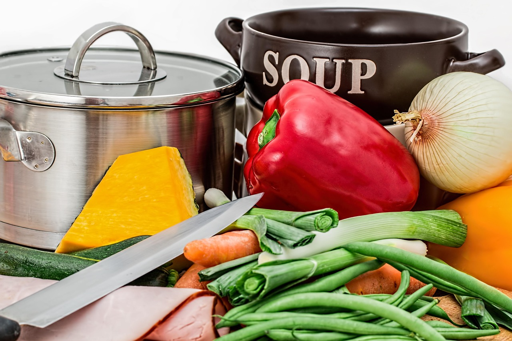
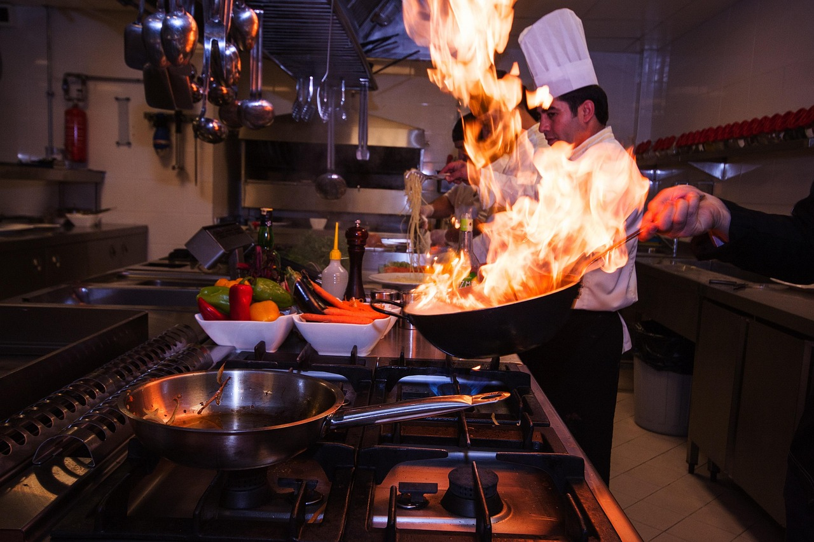
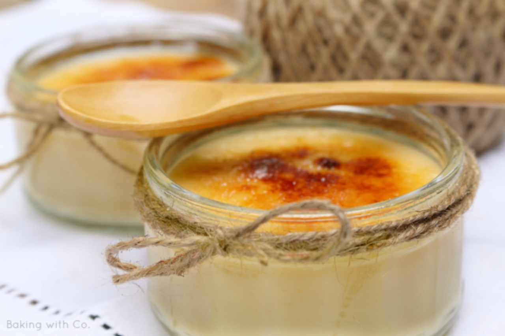
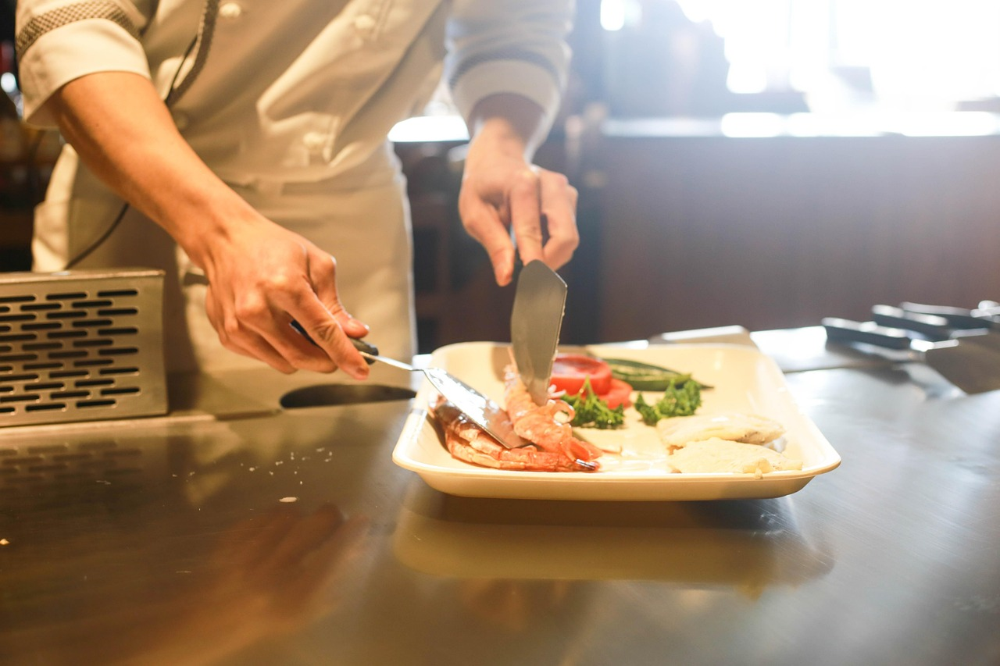

La CookCon más tradicional
En esta nueva edición de la CookCon ponemos el foco en la cocina tradicional, uno de los principales tesoros gastrónomicos nacionales.

Invitados destacados
Descubre nuestros principales invitados que estarán en las ponencias y talleres.
Ver Invitados
Blog
En nuestro blog encontrarás la receta para hacer Crema Catalana, un postre tradicional de Cataluña.
Ir al Blog
Contacto
Contacta con nosotros para preguntarnos lo que sea, desde información como visitante a cómo formar parte de la CookCon.
Contactar